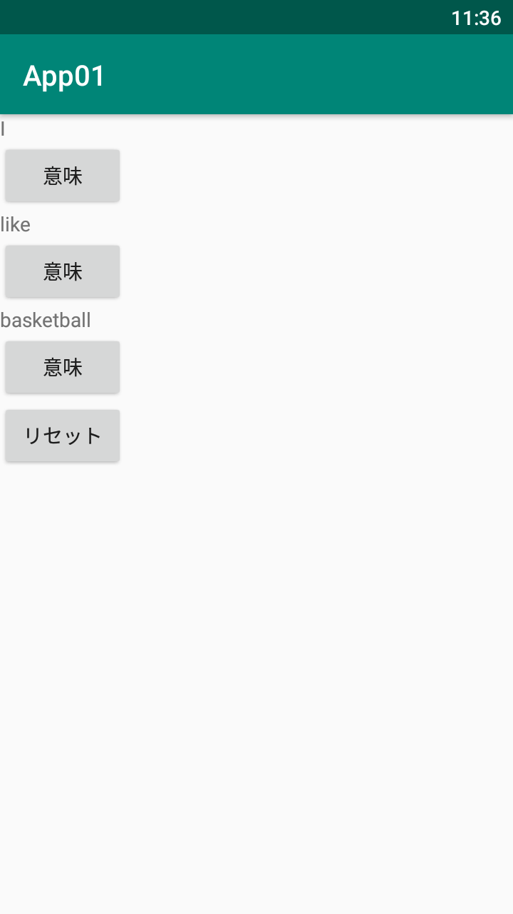

App01 基本的な画面作成
概要
App01ではAndroidにおける画面の作成方法、ならびにボタンのリスナー処理について学習する。
動作確認
app01 基本的な画面作成 pic.twitter.com/miYOJm2wYC
— いまむら たくま (@Imamuuu5) April 21, 2023
画面
ソースコード
レイアウト
※ 注意
「#」は、XMLのコメントではないため、入力しないこと。
activity_main.xml
Java
MainActivity.java
package com.example.app01;
import androidx.appcompat.app.AppCompatActivity;
import android.os.Bundle;
import android.view.View;
import android.widget.Button;
import android.widget.TextView;
public class MainActivity extends AppCompatActivity { // アプリ本体であるAppCompatActivityを継承
private TextView text1; // TextViewの変数 text1 を用意
private TextView text2; // TextViewの変数 text2 を用意
private TextView text3; // TextViewの変数 text3 を用意
private Button btn1; // Buttonの変数 btn1 を用意
private Button btn2; // Buttonの変数 btn2 を用意
private Button btn3;
private Button Reset;
@Override // オーバーライドアノテーション（このメソッドは親からオーバーライドしたものだと表す）
protected void onCreate(Bundle savedInstanceState) { // アプリが起動したときに呼ばれるメソッド
super.onCreate(savedInstanceState); // 親クラス(AppCompatActivity)のonCreate()を実行
setContentView(R.layout.activity_main); // 画面にactivity_main.xmlのレイアウトを設定
text1 = findViewById(R.id.text1); // text1というIDのViewを取得しtext1変数に代入
text2 = findViewById(R.id.text2); // text2というIDのViewを取得しtext2変数に代入
text3 = findViewById(R.id.text3);
btn1 = findViewById(R.id.btn1); // btn1というIDのViewを取得しbtn1変数に代入
btn2 = findViewById(R.id.btn2); // btn2というIDのViewを取得しbtn2変数に代入
btn3 = findViewById(R.id.btn3); // btn2というIDのViewを取得しbtn2変数に代入
Reset = findViewById(R.id.reset);
btn1.setOnClickListener(new View.OnClickListener() { // btn1にクリックリスナーを設定（定義も同時に行っている）
@Override
public void onClick(View view) { // 設定したViewがクリックされたら実行されるメソッド
text1.setText("私"); // text1のテキストを変更
}
});
btn2.setOnClickListener(new View.OnClickListener() { // btn2にクリックリスナーを設定（定義も同時に行っている）
@Override
public void onClick(View view) { // 設定したViewがクリックされたら実行されるメソッド
text2.setText("好き"); // text1のテキストを変更
}
});
btn3.setOnClickListener(new View.OnClickListener() { // btn3にクリックリスナーを設定（定義も同時に行っている）
@Override
public void onClick(View view) { // 設定したViewがクリックされたら実行されるメソッド
text3.setText("バスケットボール"); // text3のテキストを変更
}
});
Reset.setOnClickListener(new View.OnClickListener() {
@Override
public void onClick(View view) {
text1.setText("I");
text2.setText("like");
text3.setText("basketball");
}
});
}
}
補足説明
Android開発では、画面の構成を 「XML」 で記述し、動作や処理を 「Java」 で記述する。
AndroidStudioを使って開発することによりレイアウトのXMLは 「activity_main.xml」 、Javaは 「MainActivity.java」 がデフォルトで用意されるため、それに追記する形で開発を行う。
画面を構成するパーツの事を 「View」 と呼び、今回使用した 「LinearLayout」「TextView」「Button」 は全てViewである。
Viewの中でもViewの配置を担当するViewの事を 「ViewGroup」 と呼び、今回の場合LinearLayoutがViewGroupに当たる。
勘違いしないで欲しいのは、ViewGroupもViewの一種であり、役割は違うが画面構成のパーツであることに間違いはない。
イメージとしては道具を配置する部分的なパネルのようなものだと思って欲しい。
アプリのメインクラスとなるのが 「Activity」 と呼ばれるクラスである。
これは1枚の画面そのものを表すクラスだと思って欲しい。
アプリ制作では基本的にこのActivityというクラスを継承したクラスを作る必要があり、デフォルトでは 「AppCompatActivity」 というクラスを継承している。
Compatとは互換性という意味ではあるが、元々は普通の「Activity」というクラスが使われていたようだが、色々機能追加とかされたAppCompatActivityを継承するのがデフォルトとなっているため、実習ではこちらを使用する。
Androidにおけるmain()メソッドのような処理が 「onCreate()」 メソッドになるので、Javaではこれをオーバーライドして処理を書いていく。
作成したxmlの画面を表示させたい場合は 「setContentView()」 メソッドで作成したlayout.xmlを指定することにより画面は表示される。
そこからさらに色々な処理を記述したい場合は、 「findViewById()」 を使い、レイアウトからオブジェクトとしてViewを取得する必要がある。
ちなみに 「R.layout.activity_main」 というものをsetContentView()で指定しているのだが、こういう「R.なんちゃら」という書き方はAndroid開発ではよく出現し、「R」とは「リソース」ということで、AndroidStudio上にある「res」フォルダ内のレイアウトや画像などのリソースを指定できるクラスになっている。
例えば「R.layout.activity_main」であれば「R（リソース）」の「layout（レイアウト）」の「activity_main.xml」を表す。
これらの「R.layout.activity_main」などの実態は int型の変数 である。
これらの変数名にはファイル名が付けられているが、 AndroidStudioの機能によって、ファイル名などが解析され、自動でint型の変数（定数）としてプロジェクトごとにクラスファイルが自動生成 される。
他にも「R.id.text1」など、レイアウトXMLでViewに指定した IDもリソースに当たる ので、こういう指定が可能になる。